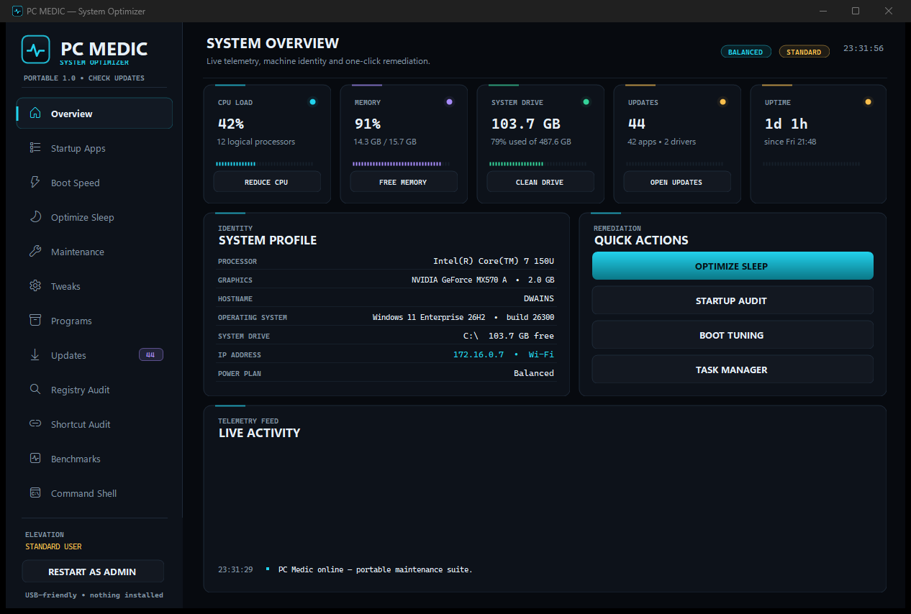
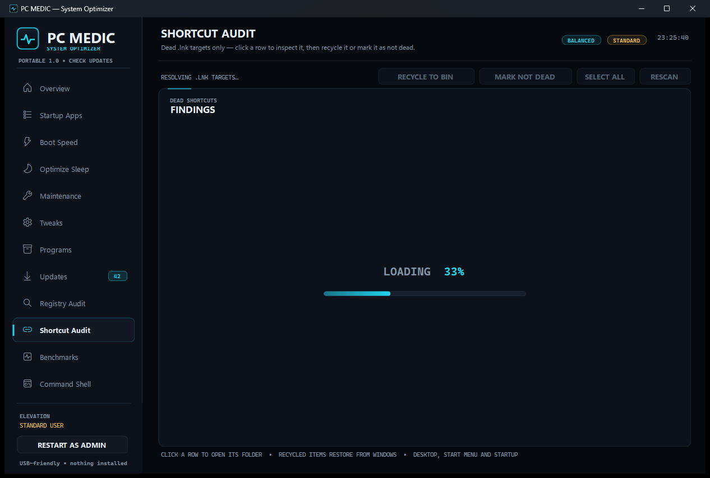
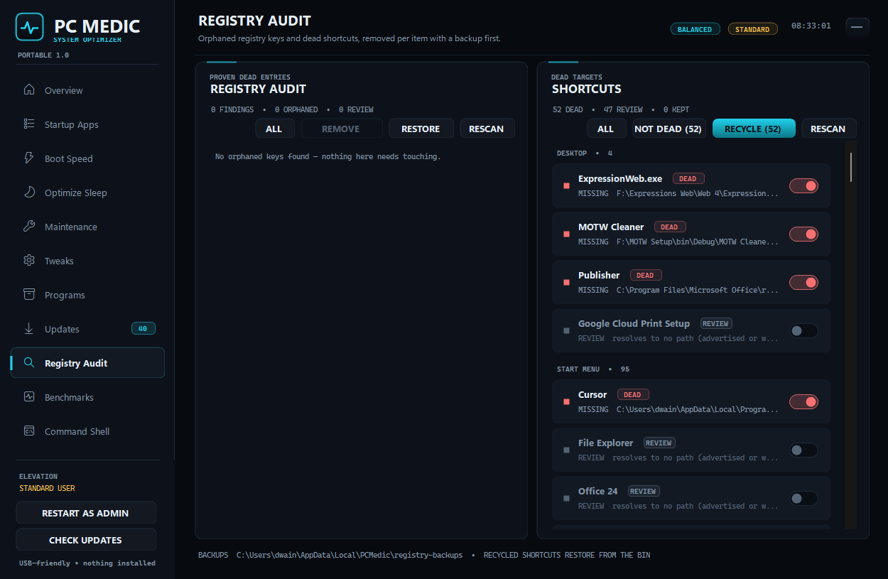

Overview
PC Medic Suite is one executable with no installer, no background service and no telemetry. Twelve pages cover the jobs people actually run on a struggling machine: what is using the CPU right now, what starts with Windows, why the boot is slow, what is filling the disk, which applications are out of date, and which registry keys or shortcuts point at files that no longer exist.
The backup page is the heavyweight: wimlib captures a whole-drive .wim image to any target, applies it back with boot repair through bcdboot, and verifies the component store with DISM — while a separate builder formats a USB stick, lays down the machine's own WinRE and writes a real BCD store, producing recovery media that never touches the firmware boot order.
The rule behind every destructive action is that it must be reversible or provable. Cleaned files go to the Recycle Bin, registry edits write a .reg backup first, boot and sleep tweaks store previous values in JSON, and the audits list only entries whose target is genuinely missing rather than whatever looks suspicious.
What it does
Disk images, boot repair and recovery media
The Backup & Restore page captures and applies whole-drive WIM images with wimlib, repairs a target's boot files with bcdboot, and runs DISM health checks on the live component store. The bootable-disk builder formats a USB drive, copies WinRE and writes a BCD store — recovery media without touching firmware boot order.
Audits that prove what they claim
The registry audit reports keys whose target file or folder is gone and nothing else, and ticks each proven entry for removal; the shortcut audit resolves every .lnk through IShellLinkW and flags only the ones that no longer point anywhere.
Updates with what Windows ships
winget streams each application upgrade into a progress bar on that row, and a bin on the row starts the app's own uninstaller. The Windows Update agent supplies the driver search, and nothing is fetched from a third-party server.
Long jobs say what they are doing
Every scan covers its results with a centred LOADING ##% plate, and any wait that reports nothing at all raises a WORKING strip across the bottom of the shell. The activity feed autoscrolls and copies to the clipboard on demand.
Every window is designer-editable
All forms and pages split cleanly into .Designer.cs control definitions and code-behind behaviour, so the whole suite opens in the Visual Studio Windows Forms designer.
Portable, and honest about rights
asInvoker, no drivers and no scheduled tasks of its own; elevation is opt-in per action and the UI always states whether you are a standard user.